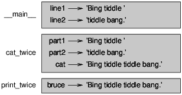

Dans le contexte de la programmation, une fonction est une séquence d’instructions nommée qui effectue un calcul. Lorsque vous définissez une fonction, vous spécifiez le nom et la séquence d’instructions. Plus tard, vous pourrez “appeler” la fonction par son nom.
Nous avons déjà vu un exemple d’appel de fonction:
>>> type (42)
<classe 'int'>
Le nom de la fonction est type. L’expression entre parenthèses est appelée l’argument de la fonction. Le résultat, pour cette fonction, est le type de l’argument.
Il est courant de dire qu’une fonction “prend” un argument et “renvoie” un résultat. Le résultat s’appelle également la valeur de retour.
Python fournit des fonctions qui convertissent les valeurs d’un type à un autre. La fonction int prend n’importe quelle valeur et la convertit en un entier, si elle le peut, ou se plaint sinon:
>>> int('32')
32
>>> int('Hello')
ValueError: invalid literal for int(): Hello
int peut convertir les valeurs en virgule flottante en nombres entiers, mais cela n’arrondit pas; il coupe la partie fraction:
>>> int(3.99999)
3
>>> int(-2.3)
-2
float convertit les entiers et les chaînes en nombres à virgule flottante:
>>> float(32)
32.0
>>> float('3.14159')
3.14159
Enfin, str convertit son argument en chaîne:
>>> str(32)
'32'
>>> str(3.14159)
'3.14159'
Python a un module mathématique qui fournit la plupart des fonctions mathématiques habituelles. Un module est un fichier contenant une collection de fonctions connexes.
Avant de pouvoir utiliser les fonctions d’un module, nous devons l’importer avec une instruction import:
>>> import math
Cette instruction crée un objet module nommé math. Si vous affichez l’objet module, vous obtenez des informations à ce sujet:
>>> math
<module 'math' (built-in)>
L’objet module contient les fonctions et les variables définies dans le module. Pour accéder à l’une des fonctions, vous devez spécifier le nom du module et le nom de la fonction, séparés par un point (également appelé période). Ce format s’appelle la notation par point.
>>> ratio = signal_power / noise_power
>>> decibels = 10 * math.log10(ratio)
>>> radians = 0.7
>>> height = math.sin(radians)
Le premier exemple utilise math.log10 pour calculer un rapport signal sur bruit en décibels (en supposant que signal_power et noise_power soient définis). Le module mathématique fournit également un journal, qui calcule les logarithmes de base e.
Le deuxième exemple trouve le sinus de radians. Le nom de la variable est un indice que péché et les autres fonctions trigonométriques (cos, tan, etc.) prennent des arguments en radians. Pour convertir des degrés en radians, divisez par 180 et multipliez par π:
>>> degrees = 45
>>> radians = degrees / 180.0 * math.pi
>>> math.sin(radians)
0.707106781187
L’expression math.pi obtient la variable pi du module mathématique. Sa valeur est une approximation à virgule flottante de π, précise à environ 15 chiffres.
Si vous connaissez la trigonométrie, vous pouvez vérifier le résultat précédent en le comparant à la racine carrée de deux divisée par deux:
>>> math.sqrt(2) / 2.0
0.707106781187
Jusqu’à présent, nous avons examiné les éléments d’un programme - variables, expressions et déclarations - de manière isolée, sans parler de la façon de les combiner.
Une des caractéristiques les plus utiles des langages de programmation est leur capacité à prendre et à composer de petits blocs de construction. Par exemple, l’argument d’une fonction peut être n’importe quel type d’expression, y compris les opérateurs arithmétiques:
x = math.sin (degrés / 360.0 * 2 * math.pi)
Et même des appels de fonction:
x = math.exp(math.log(x+1))
Presque n’importe où vous pouvez mettre une valeur, vous pouvez mettre une expression arbitraire, à une exception près: le côté gauche d’une instruction d’affectation doit être un nom de variable. Toute autre expression à gauche est une erreur de syntaxe (nous verrons des exceptions à cette règle plus tard).
>>> minutes = hours * 60 # right
>>> hours * 60 = minutes # wrong!
SyntaxError: can't assign to operator
Jusqu’à présent, nous utilisions uniquement les fonctions fournies avec Python, mais il est également possible d’ajouter de nouvelles fonctions. Une définition de fonction spécifie le nom d’une nouvelle fonction et la séquence d’instructions qui s’exécutent lorsque la fonction est appelée.
Voici un exemple:
def print_lyrics():
print("I'm a lumberjack, and I'm okay.")
print("I sleep all night and I work all day.")
def est un mot clé qui indique qu’il s’agit d’une définition de fonction. Le nom de la fonction est print_lyrics. Les règles pour les noms de fonction sont les mêmes que pour les noms de variables: les lettres, les chiffres et les traits de soulignement sont légaux, mais le premier caractère ne peut pas être un nombre. Vous ne pouvez pas utiliser un mot-clé comme nom d’une fonction et vous devez éviter d’avoir une variable et une fonction du même nom.
Les parenthèses vides après le nom indiquent que cette fonction ne prend aucun argument.
La première ligne de la définition de fonction s’appelle l’en-tête. le reste s’appelle le corps. L’en-tête doit se terminer par un deux-points et le corps doit être mis en retrait. Par convention, l’indentation est toujours de quatre espaces. Le corps peut contenir n’importe quel nombre d’énoncés.
Les chaînes dans les instructions d’impression sont placées entre guillemets. Les guillemets simples et les guillemets doubles font la même chose; la plupart des gens utilisent des guillemets simples, sauf dans les cas comme celui-ci où un guillemet simple (qui est aussi une apostrophe) apparaît dans la chaîne.
Tous les guillemets (simples et doubles) doivent être des «guillemets droits», généralement situés à côté de la touche Entrée du clavier. Les «guillemets bouclés», comme ceux de cette phrase, ne sont pas légaux en Python.
Si vous tapez une définition de fonction en mode interactif, l’interprète imprime des points (…) pour vous informer que la définition n’est pas complète:
>>> def print_lyrics():
... print("I'm a lumberjack, and I'm okay.")
... print("I sleep all night and I work all day.")
...
Pour terminer la fonction, vous devez entrer une ligne vide.
La définition d’une fonction crée un objet de fonction, qui a le type fonction:
>>> print(print_lyrics)
<function print_lyrics at 0xb7e99e9c>
>>> type(print_lyrics)
<class 'function'>
La syntaxe pour appeler la nouvelle fonction est la même que pour les fonctions intégrées:
>>> print_lyrics()
I'm a lumberjack, and I'm okay.
I sleep all night and I work all day.
Une fois que vous avez défini une fonction, vous pouvez l’utiliser dans une autre fonction. Par exemple, pour répéter le refrain précédent, nous pourrions écrire une fonction appelée repeat_lyrics:
def repeat_lyrics ():
print_lyrics ()
print_lyrics ()
Et ensuite, appelez repeat_lyrics:
>>> repeat_lyrics()
I'm a lumberjack, and I'm okay.
I sleep all night and I work all day.
I'm a lumberjack, and I'm okay.
I sleep all night and I work all day.
Mais ce n’est pas vraiment comme ça que la chanson se passe.
En rassemblant les fragments de code de la section précédente, l’ensemble du programme se présente comme suit:
def print_lyrics():
print("I'm a lumberjack, and I'm okay.")
print("I sleep all night and I work all day.")
def repeat_lyrics():
print_lyrics()
print_lyrics()
repeat_lyrics()
Ce programme contient deux définitions de fonction: print_lyrics et repeat_lyrics. Les définitions de fonctions sont exécutées exactement comme les autres instructions, mais l’effet consiste à créer des objets de fonction. Les instructions à l’intérieur de la fonction ne sont exécutées que lorsque la fonction est appelée et que la définition de la fonction ne génère aucune sortie.
Comme vous vous en doutez, vous devez créer une fonction avant de pouvoir l’exécuter. En d’autres termes, la définition de la fonction doit être exécutée avant que la fonction ne soit appelée.
En tant qu’exercice, déplacez la dernière ligne de ce programme vers le haut pour que l’appel de fonction apparaisse avant les définitions. Exécutez le programme et voyez quel message d’erreur vous obtenez.
Déplacez maintenant l’appel de fonction vers le bas et déplacez la définition de print_lyrics après la définition de repeat_lyrics. Que se passe-t-il lorsque vous exécutez ce programme?
Pour vous assurer qu’une fonction est définie avant sa première utilisation, vous devez connaître le déroulement des instructions, appelé flux d’exécution.
L’exécution commence toujours à la première déclaration du programme. Les instructions sont exécutées une par une, de haut en bas.
Les définitions de fonction ne modifient pas le flux d’exécution du programme, mais rappelez-vous que les instructions contenues dans la fonction ne sont exécutées que lorsque la fonction est appelée.
Un appel de fonction est comme un détour dans le flux d’exécution. Au lieu de passer à l’instruction suivante, le flux saute dans le corps de la fonction, y exécute les instructions, puis revient à la position où elle s’est arrêtée.
Cela semble assez simple, jusqu’à ce que vous vous souveniez qu’une fonction peut en appeler une autre. Au milieu d’une fonction, le programme peut devoir exécuter les instructions dans une autre fonction. Ensuite, lors de l’exécution de cette nouvelle fonction, le programme devra peut-être exécuter une autre fonction encore!
Heureusement, Python sait bien où il se trouve. Ainsi, chaque fois qu’une fonction est terminée, le programme reprend là où il l’avait laissé dans la fonction qui l’a appelée. Quand il arrive à la fin du programme, il se termine.
En résumé, lorsque vous lisez un programme, vous ne voulez pas toujours lire de haut en bas. Parfois, il est plus logique de suivre le déroulement de l’exécution.
Certaines des fonctions que nous avons vues nécessitent des arguments. Par exemple, lorsque vous appelez math.sin, vous passez un nombre en argument. Certaines fonctions prennent plus d’un argument: math.pow en prend deux, la base et l’exposant.
Dans la fonction, les arguments sont affectés à des variables appelées paramètres. Voici une définition pour une fonction qui prend un argument:
def print_twice(bruce):
print(bruce)
print(bruce)
Cette fonction assigne l’argument à un paramètre nommé bruce. Lorsque la fonction est appelée, elle affiche deux fois la valeur du paramètre (quel qu’il soit).
Cette fonction fonctionne avec toutes les valeurs pouvant être imprimées.
>>> print_twice('Spam')
Spam
Spam
>>> print_twice(42)
42
42
>>> print_twice(math.pi)
3.14159265359
3.14159265359
Les mêmes règles de composition qui s’appliquent aux fonctions intégrées s’appliquent également aux fonctions définies par le programmeur. Nous pouvons donc utiliser n’importe quel type d’expression comme argument pour print_twice:
>>> print_twice('Spam '*4)
Spam Spam Spam Spam
Spam Spam Spam Spam
>>> print_twice(math.cos(math.pi))
-1.0
-1.0
L’argument est évalué avant l’appel de la fonction. Ainsi, dans les exemples, les expressions ‘Spam’ * 4 et math.cos (math.pi) ne sont évaluées qu’une seule fois.
Vous pouvez également utiliser une variable comme argument:
>>> michael = 'Eric, the half a bee.'
>>> print_twice(michael)
Eric, the half a bee.
Eric, the half a bee.
Le nom de la variable que nous passons en tant qu’argument (michael) n’a rien à voir avec le nom du paramètre (bruce). Peu importe que la valeur ait été appelée à la maison (dans l’appelant); ici à print_twice, nous appelons tout le monde bruce.
Lorsque vous créez une variable dans une fonction, elle est locale, ce qui signifie qu’elle n’existe que dans la fonction. Par exemple:
def cat_twice(part1, part2):
cat = part1 + part2
print_twice(cat)
Cette fonction prend deux arguments, les concatène et affiche le résultat deux fois. Voici un exemple qui l’utilise:
>>> line1 = 'Bing tiddle '
>>> line2 = 'tiddle bang.'
>>> cat_twice(line1, line2)
Bing tiddle tiddle bang.
Bing tiddle tiddle bang.
Lorsque cat_twice se termine, la variable cat est détruite. Si nous essayons de l’imprimer, nous obtenons une exception:
>>> print(cat)
NameError: name 'cat' is not defined
Les paramètres sont également locaux. Par exemple, en dehors de print_twice, il n’existe pas de bruce.
Pour savoir quelles variables peuvent être utilisées où, il est parfois utile de dessiner un diagramme de pile. Comme les diagrammes d’état, les diagrammes de pile indiquent la valeur de chaque variable, mais ils indiquent également la fonction à laquelle appartient cette variable.
Chaque fonction est représentée par un cadre. Un cadre est une boîte avec le nom d’une fonction à côté, ainsi que les paramètres et les variables de la fonction qu’il contient. Le diagramme de pile de l’exemple précédent est présenté à la figure 3.1.

Figure 3.1: diagramme de pile.
Les cadres sont disposés dans une pile qui indique quelle fonction est appelée, et ainsi de suite. Dans cet exemple, print_twice a été appelé par cat_twice et cat_twice par __main__, qui est un nom spécial pour la plus haute image. Lorsque vous créez une variable en dehors de toute fonction, elle appartient à __main__.
Chaque paramètre fait référence à la même valeur que son argument correspondant. Ainsi, part1 a la même valeur que line1, part2 a la même valeur que line2 et bruce a la même valeur que cat.
Si une erreur se produit pendant un appel de fonction, Python affiche le nom de la fonction, le nom de la fonction qui l’a appelée et le nom de la fonction qui l’a appelée, jusqu’à __main__.
Par exemple, si vous essayez d’accéder à cat depuis print_twice, vous obtenez une erreur NameError:
Traceback (innermost last):
File "test.py", line 13, in __main__
cat_twice(line1, line2)
File "test.py", line 5, in cat_twice
print_twice(cat)
File "test.py", line 9, in print_twice
print(cat)
NameError: name 'cat' is not defined
Cette liste de fonctions s’appelle un traceback. Il vous indique dans quel fichier de programme l’erreur s’est produite, dans quelle ligne et quelles fonctions étaient exécutées à ce moment-là. Il montre également la ligne de code qui a provoqué l’erreur.
L’ordre des fonctions dans le suivi est le même que celui des images dans le diagramme de pile. La fonction en cours d’exécution est en bas.
Certaines des fonctions que nous avons utilisées, telles que les fonctions mathématiques, renvoient des résultats; faute de meilleur nom, je les appelle des fonctions fructueuses. D’autres fonctions, comme print_twice, effectuent une action mais ne renvoient pas de valeur. Ils s’appellent des fonctions vides.
Lorsque vous appelez une fonction fructueuse, vous voulez presque toujours faire quelque chose avec le résultat; Par exemple, vous pouvez l’assigner à une variable ou l’utiliser dans le cadre d’une expression:
x = math.cos(radians)
golden = (math.sqrt(5) + 1) / 2
Lorsque vous appelez une fonction en mode interactif, Python affiche le résultat:
>>> math.sqrt(5)
2.2360679774997898
Mais dans un script, si vous appelez une fonction fructueuse toute seule, la valeur de retour est perdue à jamais!
math.sqrt(5)
Ce script calcule la racine carrée de 5, mais comme il ne stocke ni n’affiche le résultat, il n’est pas très utile.
Les fonctions d’annulation peuvent afficher quelque chose à l’écran ou avoir un autre effet, mais elles n’ont pas de valeur de retour. Si vous affectez le résultat à une variable, vous obtenez une valeur spéciale appelée Aucune.
>>> result = print_twice('Bing')
Bing
Bing
>>> print(result)
None
La valeur None est différente de la chaîne “None”. C’est une valeur spéciale qui a son propre type:
>>> type(None)
<class 'NoneType'>
Les fonctions que nous avons écrites jusqu’à présent sont toutes nulles. Nous allons commencer à écrire des fonctions fructueuses dans quelques chapitres.
On ne comprend peut-être pas pourquoi il vaut la peine de diviser un programme en fonctions. Il existe plusieurs raisons:
La création d’une nouvelle fonction vous permet de nommer un groupe d’instructions, ce qui facilite la lecture et le débogage de votre programme.
Les fonctions peuvent rendre un programme plus petit en éliminant le code répétitif. Plus tard, si vous effectuez un changement, vous ne devez le faire qu’à un seul endroit.
Diviser un programme long en fonctions vous permet de déboguer les pièces une par une, puis de les assembler en un ensemble fonctionnel.
Des fonctions bien conçues sont souvent utiles pour de nombreux programmes. Une fois que vous avez écrit et débogué, vous pouvez le réutiliser.
Une des compétences les plus importantes que vous allez acquérir est le débogage. Bien que cela puisse être frustrant, le débogage est l’une des parties de la programmation les plus riches, les plus stimulantes et les plus intéressantes sur le plan intellectuel.
À certains égards, le débogage est comme un travail de détective. Vous êtes confronté à des indices et vous devez en déduire les processus et les événements qui ont conduit aux résultats que vous voyez.
Le débogage est aussi une science expérimentale. Une fois que vous avez une idée de ce qui ne va pas, modifiez votre programme et essayez à nouveau. Si votre hypothèse était correcte, vous pouvez prédire le résultat de la modification et vous rapprocher d’un programme opérationnel. Si votre hypothèse était fausse, vous devez en inventer une nouvelle. Comme Sherlock Holmes l’a souligné, “lorsque vous avez éliminé l’impossible, tout ce qui reste, aussi invraisemblable soit-il, doit être la vérité.” (A. Conan Doyle, The Sign of Four)
Pour certaines personnes, la programmation et le débogage sont la même chose. C’est-à-dire que la programmation est le processus de débogage progressif d’un programme jusqu’à ce qu’il fasse ce que vous voulez. L’idée est que vous devriez commencer avec un programme fonctionnel et apporter de petites modifications, en les corrigeant au fur et à mesure.
Par exemple, Linux est un système d’exploitation qui contient des millions de lignes de code, mais c’était à l’origine un simple programme utilisé par Linus Torvalds pour explorer la puce Intel 80386. Selon Larry Greenfield, «L’un des projets précédents de Linus était un programme qui basculerait entre l’impression AAAA et BBBB. Ceci a ensuite évolué vers Linux. ”(The Linux Users’ Guide Beta Version 1).
une fonction: Une séquence d’instructions nommée qui effectue une opération utile. Les fonctions peuvent ou non prendre des arguments et peuvent ou non produire un résultat.
définition de la fonction: Une instruction qui crée une nouvelle fonction, spécifiant son nom, ses paramètres et les instructions qu’elle contient.
objet de fonction: Une valeur créée par une définition de fonction. Le nom de la fonction est une variable qui fait référence à un objet fonction.
entête: La première ligne d’une définition de fonction.
corps: La séquence d’instructions à l’intérieur d’une définition de fonction.
paramètre: Un nom utilisé dans une fonction pour faire référence à la valeur transmise en tant qu’argument.
appel de fonction: Une déclaration qui exécute une fonction. Il se compose du nom de la fonction suivi d’une liste d’arguments entre parenthèses.
argument: Une valeur fournie à une fonction lorsque cette fonction est appelée. Cette valeur est affectée au paramètre correspondant dans la fonction.
variable locale: Une variable définie dans une fonction. Une variable locale ne peut être utilisée que dans sa fonction.
valeur de retour: Le résultat d’une fonction. Si un appel de fonction est utilisé comme expression, la valeur renvoyée est la valeur de l’expression.
fonction fructueuse: Une fonction qui retourne une valeur.
fonction vide: Une fonction qui renvoie toujours None.
Aucun: Une valeur spéciale renvoyée par les fonctions void.
module: Un fichier qui contient une collection de fonctions connexes et d’autres définitions.
déclaration d’importation: Une instruction qui lit un fichier de module et crée un objet de module.
objet module: Une valeur créée par une instruction d’importation qui donne accès aux valeurs définies dans un module.
notation par points: La syntaxe pour appeler une fonction dans un autre module en spécifiant le nom du module suivi d’un point (point) et du nom de la fonction.
composition: Utilisation d’une expression dans le cadre d’une expression plus grande ou d’une instruction dans le cadre d’une instruction plus grande
flux d’exécution: Les instructions de commande sont exécutées.
diagramme de pile: Représentation graphique d’une pile de fonctions, de leurs variables et des valeurs auxquelles elles se rapportent.
cadre: Un cadre dans un diagramme de pile qui représente un appel de fonction. Il contient les variables locales et les paramètres de la fonction.
traceback: Une liste des fonctions en cours d’exécution imprimées lorsqu’une exception se produit.
Exercice 1
Ecrivez une fonction nommée right_justify qui prend une chaîne nommée s en tant que paramètre et imprime la chaîne avec suffisamment d’espaces de début pour que la dernière lettre de la chaîne soit dans la colonne 70 de l’affichage.
>>> right_justify('monty')
monty
Astuce: Utilisez la concaténation et la répétition de chaînes. En outre, Python fournit une fonction intégrée appelée len qui renvoie la longueur d’une chaîne. La valeur de len (‘monty’) est donc 5.
Exercice 2
Un objet fonction est une valeur que vous pouvez affecter à une variable ou transmettre sous forme d’argument. Par exemple, do_twice est une fonction qui prend un objet fonction en argument et l’appelle deux fois:
def do_twice(f):
f()
f()
Voici un exemple qui utilise do_twice pour appeler une fonction nommée print_spam deux fois.
def print_spam():
print('spam')
do_twice(print_spam)
Tapez cet exemple dans un script et testez-le.
Modifiez do_twice pour qu’il prenne deux arguments, un objet fonction et une valeur, et appelle la fonction deux fois, en transmettant la valeur sous forme d’argument.
Copiez la définition de print_twice de ce chapitre dans votre script.
Utilisez la version modifiée de do_twice pour appeler print_twice deux fois, en transmettant “spam” en tant qu’argument.
Définissez une nouvelle fonction appelée do_four qui prend un objet fonction et une valeur et appelle la fonction quatre fois, en transmettant la valeur en tant que paramètre. Il ne devrait y avoir que deux déclarations dans le corps de cette fonction, pas quatre. Solution: http://thinkpython2.com/code/do_four.py.
Exercice 3
Remarque: Cet exercice doit être effectué à l’aide des déclarations et autres fonctionnalités que nous avons apprises jusqu’à présent.
Ecrivez une fonction qui dessine une grille comme suit:
+ - - - - + - - - - +
| | |
| | |
| | |
| | |
+ - - - - + - - - - +
| | |
| | |
| | |
| | |
+ - - - - + - - - - +
Astuce: pour imprimer plusieurs valeurs sur une ligne, vous pouvez imprimer une séquence de valeurs séparées par des virgules:
print ('+', '-')
Par défaut, print avance à la ligne suivante, mais vous pouvez remplacer ce comportement et mettre un espace à la fin, comme ceci:
print('+', end=' ')
print('-')
La sortie de ces instructions est “+ -” sur la même ligne. La sortie de la prochaine instruction print commencerait à la ligne suivante.
Ecrivez une fonction qui dessine une grille similaire avec quatre lignes et quatre colonnes. Solution: http://thinkpython2.com/code/grid.py. Crédit: Cet exercice est basé sur un exercice de Oualline, Practical C Programming, Third Edition, O’Reilly Media, 1997.